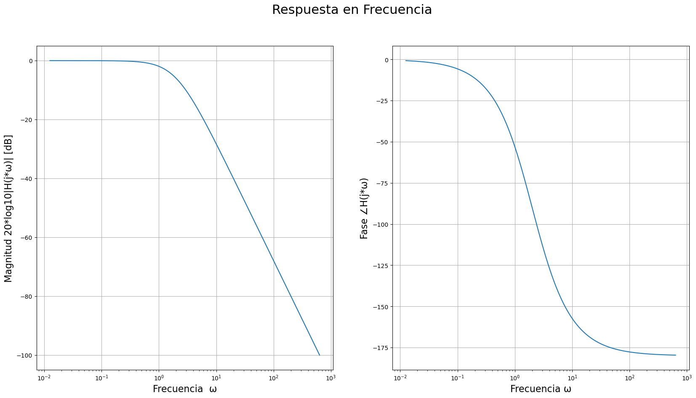
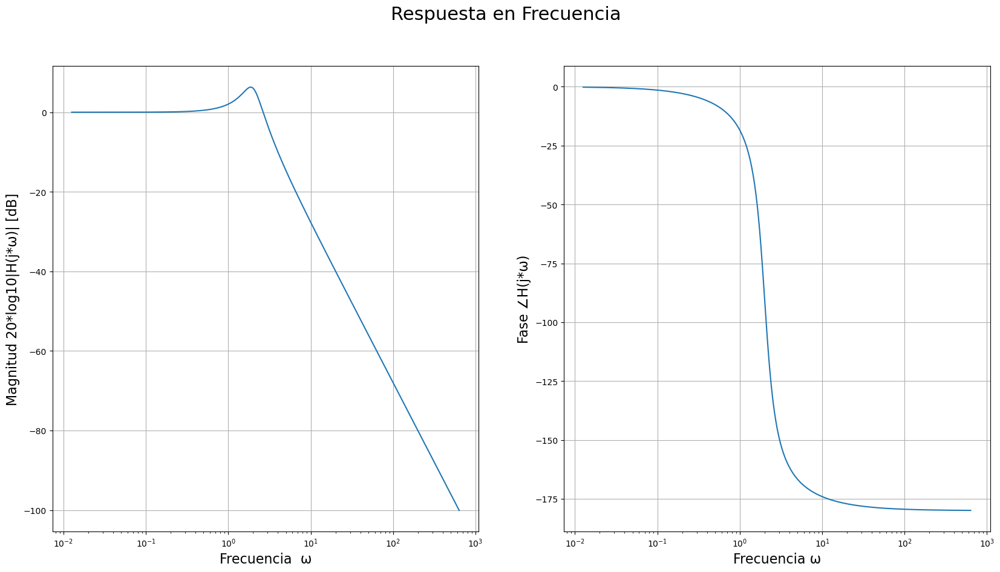
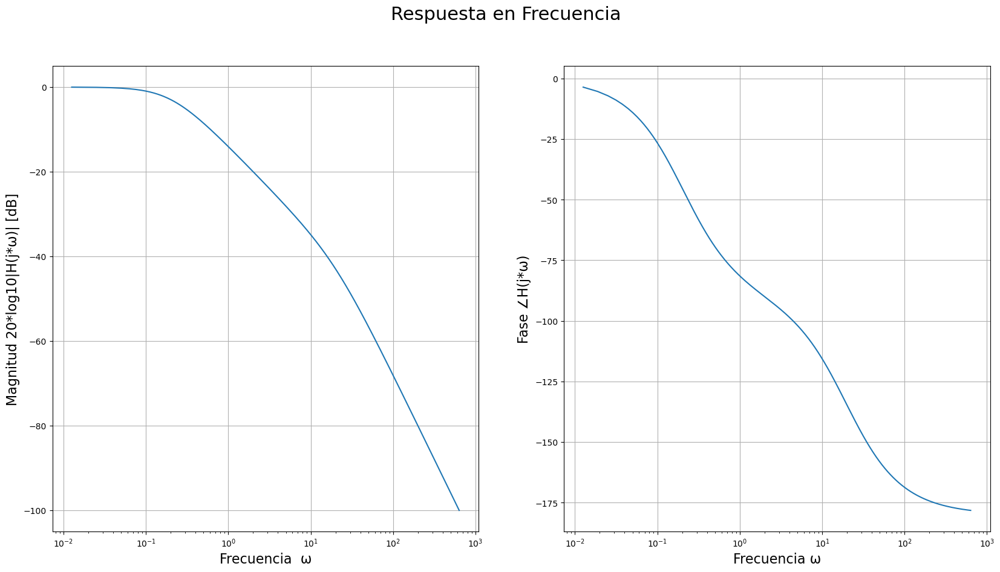
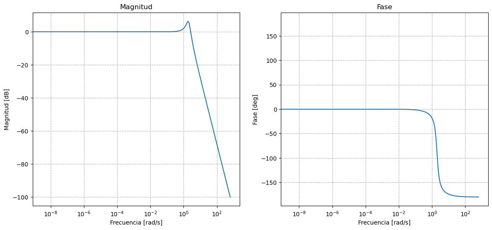

Respuesta en frecuencia - Sistemas de segundo orden¶
Librerias necesarias
import numpy as np
import matplotlib.pyplot as plt
from matplotlib.patches import Circle
import matplotlib.ticker as tck
import scipy.signal as signal
def plot_resp_freq(freq, H_w, tipo='lineal'):
if tipo == 'lineal':
#Calculos de fase y magnitud
mag_Hw = np.abs(H_w)
fase_Hw = np.angle(H_w)
# Figura con dos subplots
fig, ax = plt.subplots(1,2)
fig.suptitle('Respuesta en Frecuencia', fontsize=22)
fig.set_size_inches(20, 10)
ax[0].plot(freq,mag_Hw)
ax[1].plot(freq,fase_Hw)
# add lables
ax[0].set_xlabel("Frecuencia \u03C9", fontsize=16)
ax[0].set_ylabel("Magnitud |H(j*\u03C9)|", fontsize=16)
ax[1].set_ylabel("Fase \u2220H(j*\u03C9)", fontsize=16)
ax[1].set_xlabel("Frecuencia \u03C9", fontsize=16)
ax[0].grid(True)
ax[1].grid(True)
plt.show()
elif tipo == 'bode':
#Transformacion a decibeles
mag_Hw_dB = 20*np.log10(np.abs(H_w))
fase_Hw = np.angle(H_w)*180/np.pi
#Conservo solo lo que corresponde a frecuencias positivas
indx = np.where(freq >= 0.01)
mag_Hw_dB = mag_Hw_dB[indx]
fase_Hw = fase_Hw[indx]
freq = freq[indx]
# Figura con dos subplots
fig, ax = plt.subplots(1,2)
fig.suptitle('Respuesta en Frecuencia', fontsize=22)
fig.set_size_inches(20, 10)
ax[0].plot(freq,mag_Hw_dB)
ax[0].semilogx()
ax[1].plot(freq,fase_Hw)
ax[1].semilogx()
# add lables
ax[0].set_xlabel("Frecuencia \u03C9", fontsize=16)
ax[0].set_ylabel("Magnitud 20*log10|H(j*\u03C9)| [dB]", fontsize=16)
ax[1].set_ylabel("Fase \u2220H(j*\u03C9)", fontsize=16)
ax[1].set_xlabel("Frecuencia \u03C9", fontsize=16)
ax[0].grid(True)
ax[1].grid(True)
plt.show()
Filtro Pasa-Bajos¶
Suponga un filtro con la siguiente función de transferencia: \(H(s) = \frac{{\omega}_0^2}{(s^2+s\frac{{\omega}_0}{Q}+{\omega}_0^2}\)
La respuesta en frecuencia del filtro es: \(H(j\omega) = \frac{{\omega}_0^2}{(j\omega)^2+(j\omega)\frac{{\omega}_0}{Q}+{\omega}_0^2}\)
Con Q= 1/2¶
#frecuencia
fmin = -100
fmax = 100
paso = 0.001
f = np.arange(fmin,fmax+1,paso)
w = f*2*np.pi
#sistema
w0 = 2
Q = 1/2
H_w = (w0**2)/((1j*w)**2 + (1j*w)*w0/Q + w0**2) #
#plot_resp_freq(w, H_w, 'lineal')
plot_resp_freq(w, H_w, 'bode')

Con Q > 1/2¶
#sistema
w0 = 2
Q = 2
H_w = (w0**2)/((1j*w)**2 + (1j*w)*w0/Q + w0**2) #
plot_resp_freq(w, H_w, 'bode')

Con Q < 1/2¶
#sistema
w0 = 2
Q = 0.1
H_w = (w0**2)/((1j*w)**2 + (1j*w)*w0/Q + w0**2) #
plot_resp_freq(w, H_w, 'bode')

Utilizando la libreria scipy.signal¶
#sistema
w0 = 2
Q = 2
sys = signal.lti([0, 0, w0**2], [1, w0/Q, w0**2]) #
#respuesta en frecuencia
w, H = signal.freqresp(sys,w)
mag = abs(H)#magnitud
#fase = np.angle(H,deg=True)#fase[deg]
fase = np.angle(H)/np.pi#fase[rad]
C:\Users\Agustin\Anaconda3\lib\site-packages\scipy\signal\filter_design.py:1626: BadCoefficients: Badly conditioned filter coefficients (numerator): the results may be meaningless
"results may be meaningless", BadCoefficients)
fig, (ax1, ax2, ax3) = plt.subplots(1, 3, figsize=(18, 5))
#diagrama de polos y ceros
ax1.plot(sys.zeros.real, sys.zeros.imag, 'o')#creos
ax1.plot(sys.poles.real, sys.poles.imag, 'x')#polos
ax1.set_xlim(-3,3)#limite en parte real
ax1.set_ylim(-3,3)#limite en parte imaginaria
ax1.grid(linestyle='--')#grilla punteada
ax1.set_title("Diagrama de polos y ceros")
ax1.set_xlabel("Parte Real")
ax1.set_ylabel("Parte Imaginaria")
ax2.plot(w,mag)
#ax2.plot(w0,np.sqrt(2)/2,'x')
ax2.set_title("Modulo de la respuesta en frecuencia")
ax2.set_xlabel("Frecuencia [rad/s]")
ax2.set_ylabel("Amplitud")
ax2.set_yticks([0,0.2,0.4,0.6,np.sqrt(2)/2,0.8,1])
ax2.grid(linestyle='--')
ax3.plot(w,fase)
#ax3.plot(w0,-1/4,'x')
ax3.set_title("Fase de la respuesta en frecuencia")
ax3.set_xlabel("Frecuencia [rad/s]")
ax3.set_ylabel("Angulo[rad]")
ax3.yaxis.set_major_formatter(tck.FormatStrFormatter('%g $\pi$'))
ax3.yaxis.set_major_locator(tck.MultipleLocator(base=0.25))
ax3.grid(linestyle='--')
fig.show()
C:\Users\Agustin\Anaconda3\lib\site-packages\ipykernel_launcher.py:27: UserWarning: Matplotlib is currently using module://matplotlib_inline.backend_inline, which is a non-GUI backend, so cannot show the figure.
wb, magb, faseb = signal.bode(sys,w)
fig, (ax1, ax2) = plt.subplots(1, 2, figsize=(14, 6))
ax1.semilogx(wb, magb)
#ax1.plot(w0,-3,'x')
ax1.set_title("Magnitud")
ax1.set_xlabel("Frecuencia [rad/s]")
ax1.set_ylabel("Magnitud [dB]")
ax1.grid(linestyle='--', which="both")#grilla punteada para escala logaritmica
ax2.semilogx(w, faseb)
#ax2.plot(w0,-45,'x')
ax2.set_title("Fase")
ax2.set_xlabel("Frecuencia [rad/s]")
ax2.set_ylabel("Fase [deg]")
ax2.grid(linestyle='--', which="both")
